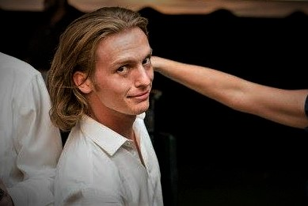

About Me
After high school, I spent the following 5 years traveling to, and living in, the sunny state of Florida. I was quite lucky to go to university in Tampa, FL. Besides the almost always delightful weather, I met some of my best friends to date going to that school and couldn't have imagined what my life would be like if I decided to leave. I went into freshman year as a wide-eyed, excited little boy with no major, no directions, and no new friends; aka every single freshman. I declared my major end of sophomore year; Forensic Science. Which sounded a lot cooler and easier than I thought; upper-level chemistry and biology course mixed in with everything there is to know about a crime scene. It was hell. However, my academics weren't even close to some of the greatest challenges I face in my 5 years of undergrad work. Along those years I became Vice President of two Greek organizations and the founder/event coordinator of another. Needless to say, by my senior year my hands we full and honestly overflowing. I made it though, May 2015 I graduated The University of Tampa (the cool UT) with a B.S Forensic Science with Minors in Biology and Criminal Investigation. As you can imagine I was overjoyed and filled with pride I graduated college, I am an adult, I will now be able to get the job I have always wanted in the criminal justice field. Wrong! Instead, I pass the days waiting tables, traveling to multiple states in search of a job in my field of study. Not to my surprise when I find that the jobs I'm suited for, people twice my age and with twice my education are in the same application pool. I didn't stand a chance. "Everything happens for a reason," I tell myself, "everything happens for a reason" but of course I just could not find that reason. After summer '17 I said to myself it is time to move out of my childhood room in Wilmington, DE and move on. Having my dad help sell my Jeep, saying goodbye to all my friends and family I moved halfway across the country and landed here, Austin, TX. I am now enrolled at The University of Texas (the weird UT) Coding Boot-Camp where am I learning all I can to put myself at the forefront of this digital age.